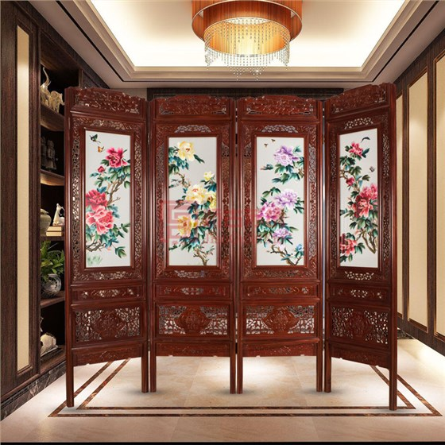
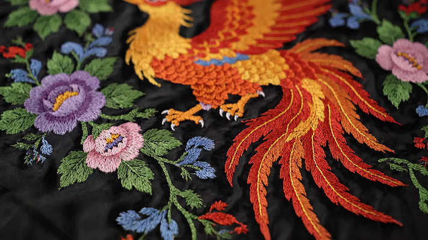
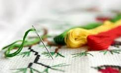
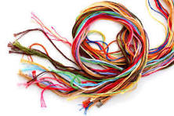
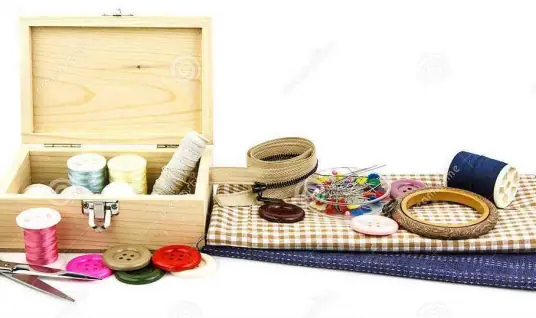

苏绣发源于苏州吴县一带，至今已有两千多年的历史。苏绣以针法精细、色彩雅致著称，被誉为"绣中之绣"。双面绣更是苏绣一绝，在同一块底料上正反两面绣出不同的图案，两面均可观赏，堪称巧夺天工。
一幅精美的苏绣作品需要经历选稿、上绷、描稿、配线、刺绣、装裱等多道工序。绣娘往往需要数月甚至数年才能完成一件大型作品，每一针都凝聚着匠人的心血与智慧。

中国刺绣以苏绣、湘绣、粤绣、蜀绣并称四大名绣。苏绣秀丽婉约，湘绣豪放写实，粤绣华丽繁复，蜀绣工整严谨。四大名绣各具鲜明的地域特色和艺术风格，共同构成了中国刺绣艺术的璀璨星空。
苏绣善长绣猫、金鱼等题材，针法细腻入微；湘绣以狮虎为长，气势雄浑；粤绣多用金线银线，富丽堂皇；蜀绣以龙凤、花鸟为主，古朴典雅。此外，还有京绣、汴绣、瓯绣、杭绣等地方绣种，百花齐放，争奇斗艳。

最基本的针法，线条排列整齐均匀，起落针都在纹样边缘，适合表现规整的几何纹样。

线条参差排列、分层相套，能表现丰富的色彩渐变层次，是苏绣中最具代表性的针法。
打破传统规律的针法，以交叉重叠的线条表现光影和质感，适合写实风格创作。

刺绣的基本工具有绣绷（固定绣布）、绣针（按粗细分为多种型号）、丝线（真丝线光泽柔美）、剪刀（小巧锋利）等。其中绣绷是最重要的辅助工具，它能将绣布拉紧固定，便于双手同时操作。
丝线的选择尤为讲究，不同的绣品需要不同粗细和光泽度的丝线。一根丝线可分为两绒，一绒又可劈为八丝，绣制精细部位时甚至只用一丝。正是对材料近乎苛刻的讲究，才成就了刺绣艺术的非凡品质。